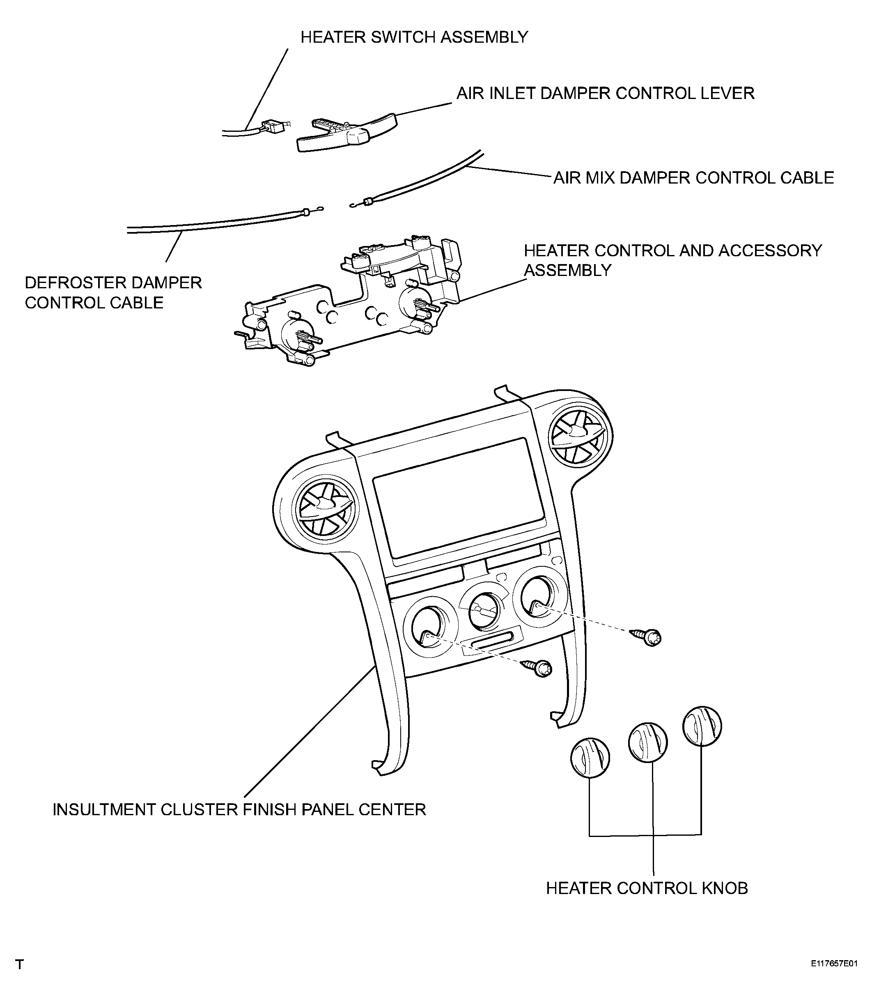

Home
>>
Scion
>>
2006
>>
xB Standard
>>
Repair and Diagnosis (Single Page)
>>
Heating, Ventilation & A/C (HVAC)
>>
HVAC Control Systems
>>
Air Conditioning
>>
Heater Switch
>>
Components
Heater Switch: Components
Fig 1: Identifying Heater Switch Components

Courtesy of © TOYOTA, LICENSE AGREEMENT TMS1002